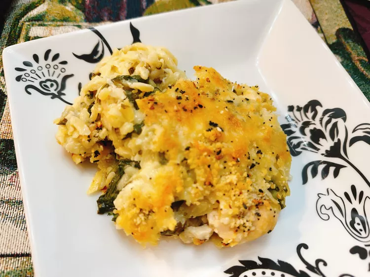

Everything Bagel Seasoned Chicken Casserole

Description
These smoked jalapeno poppers go great with brisket. If you've never had
smoked cream cheese before, you are in for a treat. I prefer to use oak or
hickory in the smoker for these, but feel free to use any wood you like.
Ingredients
- 1 cup orzo pasta
- 1 1/2 cups chicken broth
- 1/2 cup spinach artichoke dip, or more to taste
- 2 garlic cloves, minced
- 1 pinch crushed red pepper flakes
- 1 pound boneless skinless chicken, cubed
- 1/4 teaspoon salt, or to taste
- 1/2 teaspoon Italian seasoning
- 2 tablespoons panko bread crumbs
- 1/3 cup shredded mozzarella cheese
- 2 teaspoons everything bagel seasoning
Directions
-
Preheat the oven to 375 degrees F (190 degrees C). Spray a 12x8-inch
casserole dish with cooking spray.
-
Add orzo into the casserole dish. Pour in chicken broth. Add spinach
artichoke dip, minced garlic, and crushed red pepper flakes; stir to
combine.
-
Season chicken with salt and Italian seasoning. Add chicken to the
casserole dish; cover with aluminum foil.
-
Bake in the preheated oven until orzo is tender with a bite, and chicken
is no longer pink at the center, about 45 minutes. An instant-read
thermometer inserted near the center of chicken should read at least 165
degrees F (74 degrees C).
-
Remove casserole from the oven, uncover, and sprinkle evenly with panko,
mozzarella cheese, and bagel seasoning.
-
Set an oven rack about 6 inches from the heat source and preheat the
oven's broiler. Broil casserole until topping is golden, about 5
minutes. Serve immediately.